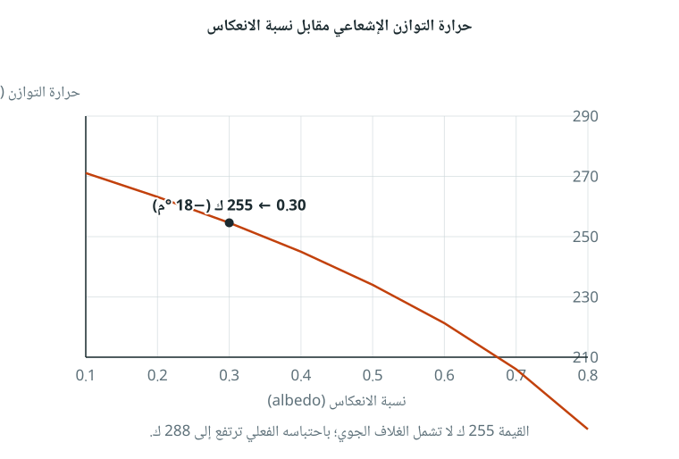

كيف نحسب درجة حرارة الأرض الإشعاعية؟
غيّر نسبة الانعكاس والانبعاثية، وتابع حرارة التوازن بالكلفن والمئوية.
المقياس يبدأ عند حالة الأرض (انعكاس 0.30) = 255 كلفن.
افتراضات النموذج والمصدر
T = [S(1−a)/(4σε)]^¼
جسم كروي صفري الأبعاد بلا غلاف جوي
ثابت شمسي 1361 W/m²
انبعاثية سطحية محلّية
لا انتقال حرارة بين خطوط العرض
Solar constant and total solar irradiance — NASA
Stefan-Boltzmann law and planetary energy balance — OpenStax
الأرض تكتسب طاقة من الشمس وتفقدها بالإشعاع. التوازن يحدث عند الحرارة التي يتساوى فيها الاثنان. لكن الكسب يُوزّع على سطح الكرة كلها، فيكون ربع القيمة المباشرة — لأن قرص الاستقبال أربعة أمثال مساحة سطح الكرة.
باختصار: (1361 × 0.70) ÷ 4 ≈ 238 واط لكل متر مربع. والحرارة التي يشعّ بها سطح بهذا المعدل هي 255 كلفن، أي −18 °م. الحرارة المقيسة 15 °م، والفرق 33 درجة يعود إلى أن الغلاف الجوي يعيد إشعاع جزء من الطاقة إلى السطح.
كيف تعمل الظاهرة؟
الجسم الذي يمتص إشعاعًا يجب أن يشعّ ما يعادله وإلا ارتفعت حرارته بلا حد. انبعاثية الجسم تعتمد على حرارته بالأسّ الرابع: مضاعفة الحرارة المطلقة ترفع الإشعاع 16 مرة. هذا الأسّ الحاد هو الذي يجعل النظام يستقرّ عند حرارة محدودة بدل أن ينفلت.
العلاقة بالأرقام
المعادلة: T = [S(1−a)/(4σε)]^¼. عند نسبة الانعكاس 0.30 ، الانبعاثية 1.00 ، يعطي الحساب: حرارة التوازن = 254.6 ك؛ بالدرجة المئوية = -18.6 °م. حالة «امتصاص أكبر» (نسبة الانعكاس 0.10 ، الانبعاثية 1.00 ): حرارة التوازن = 271.1 ك؛ بالدرجة المئوية = -2.1 °م. حالة «انعكاس أكبر» (نسبة الانعكاس 0.70 ، الانبعاثية 1.00 ): حرارة التوازن = 206.0 ك؛ بالدرجة المئوية = -67.2 °م. هذه أمثلة مولدة من دالة الحساب نفسها؛ وليست قياسات فعلية أو مواصفات لجهاز تجاري.
مفاهيم متقاربة
يُخلط بين حرارة التوازن الإشعاعي وبين حرارة السطح الفعلية: الأولى حساب بلا غلاف جوي، والثانية تشمل الاحتباس. ويُخلط بين الانعكاس والإشعاع الطويل: الأول يعكس الضوء المرئي القادم، والثاني يشعّ طاقة تحت الحمراء من السطح نفسه.
حدود التطبيق
النموذج صفري الأبعاد: يفترض سطحًا واحدًا متساوي الحرارة ولا يعرف الفصول ولا الليل ولا المحيطات. كما يفترض انبعاثية مثالية، ويغفل السحب والهباء والجليد وانتقال الحرارة من المناطق الحارة للباردة. لذلك يُستعمل تقديرًا أوليًّا يتبعه نماذج مناخية كاملة.

| الكمية | القيمة | المصدر |
|---|---|---|
| حرارة التوازن — الحالة الافتراضية | 254.6 ك | [1] |
| بالدرجة المئوية — الحالة الافتراضية | -18.6 °م | [1] |
المصادر
- 1 Solar constant and total solar irradiance — NASA. earthobservatory.nasa.gov/features/EnergyBalance · اطُّلع عليه 2026-11-16
- 2 Stefan-Boltzmann law and planetary energy balance — OpenStax. openstax.org/books/college-physics/pages/14-7-radiation · اطُّلع عليه 2026-11-16
راجعه: مراجعة آلية — بوابة الديوان (فحص بنيوي وأرقام) 2026-11-16 · 2026-11-16 · آخر تحديث 2026-11-20
رجوع إلى المعمل